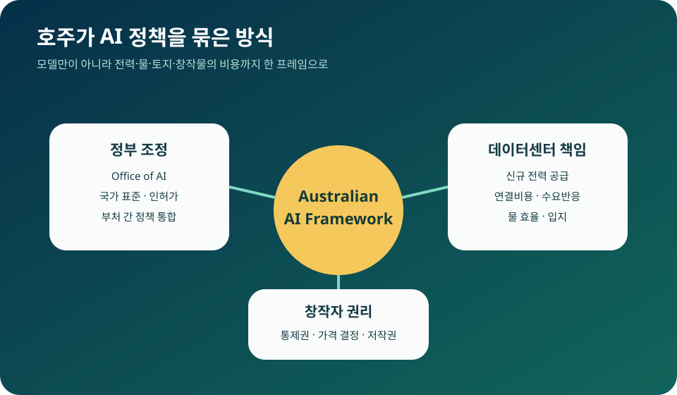

호주의 AI 국가 프레임: 데이터센터 전력·물·저작권을 한꺼번에 묶었다
호주 정부가 AI 정책을 모델 안전만의 문제로 보지 않겠다고 선언했다. 총리실에 Office of AI를 만들고, 대형 데이터센터가 새 전력 공급과 전력망 연결 비용을 스스로 부담하게 하며, 물 사용과 입지를 관리하고, 창작자가 자신의 작품 사용 조건과 가격을 결정할 수 있도록 하겠다는 구상이다. AI가 소프트웨어이면서 동시에 전력·토지·콘텐츠 산업이라는 사실을 국가 정책 한 장에 담았다.
AI in Australia's Interests
빠른 인허가와 강한 비용 부담을 동시에 제시했다
Anthony Albanese 총리는 7월 15일 공식 연설에서 AI 투자를 유치하되 대형 데이터센터가 소비자의 전기요금을 올려서는 안 된다고 밝혔다. 신규 시설에는 새 전력 공급을 뒷받침하고 연결비용을 전액 부담하며, 전력망이 필요로 할 때 사용량을 줄이고, 가능한 한 물을 효율적으로 쓰는 의무를 추진한다.

총리가 발표한 네 가지 약속
첫째는 총리실 산하 Office of AI다. AI 정책이 산업, 통신, 에너지, 저작권, 교육, 국가안보 부처로 나뉘어 생기는 공백을 줄이고 정부 전체의 기준과 투자를 조정하는 창구를 만들겠다는 것이다. 구체적인 인력과 권한은 후속 발표가 필요하다.
둘째는 Australian Standards for AI다. 기존 데이터센터 기대사항을 바탕으로 국가 차원의 기준을 만들고, 고위험 AI와 인프라에 적용할 규칙을 정한다. 호주 정부는 기회를 막지 않으면서 안전과 공공이익을 기준으로 삼겠다고 설명했다.
셋째는 대형 데이터센터의 비용 책임이다. 새 시설은 필요한 전력을 장기적으로 확보하고, 송전·배전망 연결 비용을 충분히 부담해야 한다. 일반 가정과 기존 기업의 전기요금으로 AI 시설을 보조하지 않겠다는 원칙이다.
넷째는 창작자 권리다. 총리는 호주 음악가, 작가, 예술가의 작품이 AI 회사에 공짜로 제공되는 자원이 아니며, 권리자가 사용 여부와 가격을 결정할 수 있어야 한다고 밝혔다. 다만 구체적인 라이선스 제도와 법 개정안은 아직 나오지 않았다.
데이터센터가 전력 문제인 이유
AI 데이터센터는 수천~수만 개의 가속기를 24시간 돌린다. 서버뿐 아니라 냉각, 저장장치, 네트워크가 전력을 사용하고, 전력 공급이 불안하면 값비싼 장비를 충분히 활용할 수 없다. 그래서 데이터센터 계약은 발전소와 송전망 투자까지 함께 움직인다.
호주의 새 원칙은 시설 운영자가 자기 수요만큼의 신규 공급을 뒷받침하도록 한다. 전력을 시장에서 단순 구매하는 것과 달리, 발전 설비와 장기 구매계약을 통해 전체 공급량을 늘려야 한다는 의미다. 세부 이행방식은 주정부와 전력시장 규칙에 따라 달라질 수 있다.
전력망 연결비용도 논쟁거리다. 초대형 시설을 연결하려면 변전소, 송전선, 배전 설비를 확장해야 한다. 비용이 일반 요금에 섞이면 데이터센터가 없는 지역 주민까지 AI 기업의 투자를 부담할 수 있다. 호주 정부는 이 비용을 시설 측에 명확히 배분하겠다는 방향을 냈다.
수요반응 의무도 눈에 띈다. 전력망이 폭염이나 발전기 고장으로 부족해질 때 데이터센터가 일부 작업을 늦추거나 다른 지역으로 옮겨 사용량을 줄이면 정전을 막는 데 도움이 된다. 항상 최대 출력으로 돌리는 시설이 아니라 전력망과 협조하는 유연한 소비자로 만들겠다는 생각이다.
물과 입지까지 AI 정책에 들어간 이유
많은 데이터센터는 서버 열을 식히는 과정에서 물을 사용한다. 물이 부족한 지역에서는 주민 생활, 농업, 산업과 경쟁할 수 있다. 호주는 건조 지역이 많아 물 사용량과 냉각 방식이 시설 허가의 핵심 쟁점이 된다.
정부는 시설이 가능한 한 물을 효율적으로 사용하고, 위치를 정할 때 지역의 물·전력 사정을 함께 보겠다고 했다. Guardian 보도는 주택 공급이 필요한 토지를 데이터센터가 밀어내지 않도록 입지 문제도 검토한다고 전했다.
반면 호주는 AI 투자를 놓치고 싶어 하지 않는다. 정부는 기준을 명확히 한 시설에는 인허가를 빠르게 처리하겠다는 메시지도 냈다. “아무 데나 빨리 짓게 한다”가 아니라 비용과 자원 조건을 먼저 충족하면 절차의 불확실성을 줄이겠다는 교환에 가깝다.
창작자 저작권은 무엇이 달라질까
생성형 AI 회사는 뉴스, 책, 음악, 이미지, 영상 같은 대규모 데이터를 학습에 사용한다. 권리자들은 동의와 보상 없이 작품이 사용되고, 그 결과물이 원작 시장을 대체할 수 있다고 우려한다. 호주 창작자 단체가 이번 발표를 환영한 이유다.
총리의 원칙은 창작자가 통제권과 가격 결정권을 가진다는 것이다. 이것이 현실이 되려면 AI 회사가 어떤 데이터를 썼는지 투명하게 밝히고, 집단 라이선스나 개별 계약, 옵트아웃, 분쟁 해결 절차를 마련해야 한다.
아직 “AI 학습은 언제 공정 이용인가”, “기존 학습데이터에 소급할 것인가”, “해외에서 학습한 모델을 어떻게 다룰 것인가”에 대한 답은 없다. 따라서 이번 발표는 완성된 저작권법이 아니라 향후 법 개정의 정치적 기준선이다.
산업계와 지역사회의 반응
데이터센터 업계는 명확한 규칙과 빠른 승인에 기대를 걸 수 있다. 전력과 물 기준이 예측 가능하면 사업자는 부지를 고르고 장기 계약을 준비하기 쉽다. 호주는 재생에너지와 넓은 토지, 안정된 법제도를 AI 인프라 투자 장점으로 내세울 수 있다.
지역사회와 환경단체는 기준이 시행되기 전까지 대형 프로젝트 승인을 늦춰야 한다고 주장할 수 있다. 의무 문구가 강해도 예외가 많거나 수치 기준이 약하면 실제 물·전력 부담은 줄지 않는다. 독립적인 사용량 공개와 지역별 영향평가가 필요하다.
창작자 쪽에서도 원칙만으로는 부족하다는 반응이 가능하다. 권리자가 가격을 정할 수 있다고 말해도 거대 AI 기업과 개인 작가의 협상력은 다르다. 집단관리단체, 표준계약, 최소 보상, 학습데이터 공개가 뒤따라야 실질적인 권리가 된다.
다른 나라와 다른 점
유럽연합의 AI 규제는 모델 위험과 투명성 의무에 무게를 두고, 미국은 연방·주 규칙과 기업 자율기준이 섞여 있다. 호주 발표는 데이터센터의 물리적 비용과 창작자 보상을 같은 국가 프레임에 넣었다는 점에서 특징적이다.
이는 AI 정책의 범위가 넓어지고 있음을 보여준다. 모델이 안전한 답을 하는지만 검사해서는 전기요금 상승, 물 부족, 토지 갈등, 콘텐츠 무단사용을 해결할 수 없다. AI가 사회에 들어오는 전체 경로를 규율해야 한다는 접근이다.
한국에 주는 질문
한국도 AI 데이터센터 확대를 추진하면서 수도권 전력망 부족과 지역 유치 경쟁을 겪고 있다. 시설이 필요한 전력망 증설 비용을 누가 부담할지, 지역 주민에게 어떤 정보와 보상을 제공할지, 물 사용을 어떻게 공개할지 미리 정해야 한다.
뉴스·웹툰·음악·출판 데이터를 AI 학습에 쓰는 문제도 같다. 개별 기업 소송에만 맡기기보다 데이터 사용 공개, 집단 라이선스, 창작자 보상 원칙을 산업정책과 함께 설계할 필요가 있다.
내가 보는 핵심
호주 발표의 가장 좋은 점은 AI의 편익과 비용을 같은 문서에서 다룬다는 것이다. 투자 유치만 외치거나 규제만 강조하지 않고, 빨리 지을 수 있게 해주는 대신 전력·물·저작권 비용을 사업자가 감당하라는 거래를 제시했다.
성공 여부는 2027년 입법과 세부 기준에 달렸다. 의무가 실제 수치와 공개제도로 이어지고, 비용이 주민에게 전가되지 않으며, 창작자에게 협상력이 생기는지 확인해야 한다. 그 결과에 따라 다른 국가가 따라 할 수 있는 AI 인프라 정책의 모델이 될 수 있다.
Comments
댓글